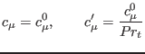
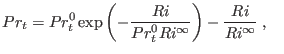

Next: Flux Richardson number stability Up: The turbulence model Previous: The Munk and Anderson Contents
INTERFACE:
subroutine cmue_sg(nlev)DESCRIPTION:
This subroutine computes stability functions according to
|  | (199) |
|  | (200) |
USES:
use turbulence, only: Prandtl0_fix,cm0_fix use turbulence, only: cmue1,cmue2,as,an IMPLICIT NONEINPUT PARAMETERS:
integer, intent(in) :: nlevREVISION HISTORY:
Original author(s): Hans Burchard & Karsten Bolding